Задающий генератор - цифровой синтезатор частоты с
выходным усилителем
(диапазон до 70 МГц, амплитуда выходного напряжения до 4 В)
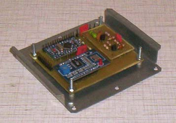 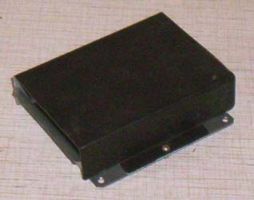
Устройство на основе цифрового синтезатора частоты (DDS - direct digital synthesis) разработано в качестве задающего генератора для усилителей мощности высокой частоты, использующихся при проведении технологических опытов, в которых требуется высокая стабильность частоты рабочего напряжения (тока). Для предотвращения помех теле- и радиоприему все узлы генератора собраны в металлическом корпусе, выполняющем роль экрана, а опыты проводились в экранированных боксах. Блок-схема задающего генератора показана на рис. 1.
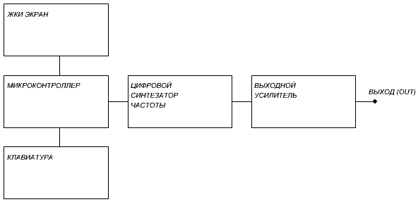
Рис. 1. Блок-схема задающего генератора на основе цифрового синтезатора частоты с микроконтроллером и выходным усилителем.
Задающий генератор построен из трех модулей: цифровой синтезатор частоты, микроконтроллер и выходной усилитель. В качестве цифрового синтезатора частоты используется модуль HC-SR08 на основе микросхемы AD9851 [1]. Микроконтроллером служит модуль Arduino Pro mini (микроконтроллер на микросхеме ATmega328) с предварительно загруженным отладчиком, позволяющим использовать программы, написанные на языке C в среде программирования Arduino [2]. Выходной усилитель - широкополосный усилитель мощности. Для установки и контроля режима работы устройства используются жидкокристаллический дисплей и клавиатура, подключаемые к выходным линиям микроконтроллера.
Полоса рабочих частот задающего генератора до 70 МГц, амплитуда выходного напряжения примерно 4 В на частоте 40 МГц.
Электрическая принципиальная схема задающего генератора приведена на рис. 2.
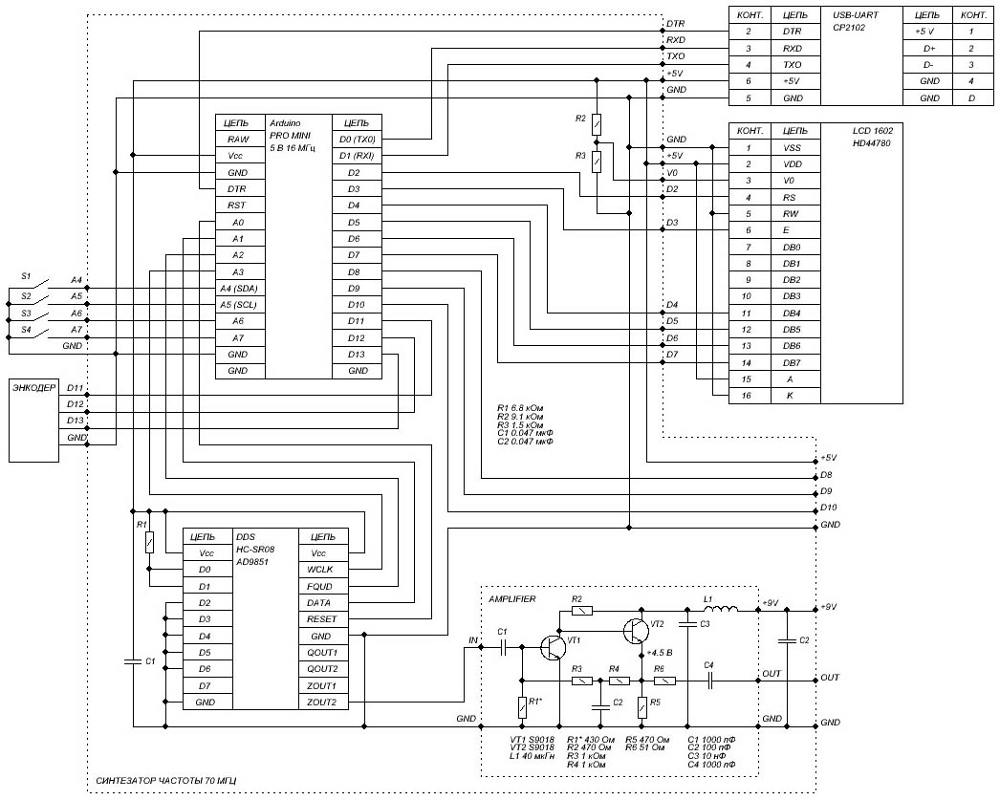
Рис. 2. Электрическая принципиальная схема задающего генератора на основе цифрового синтезатора частоты с микроконтроллером и выходным усилителем.
Сигнальные выводы модуля цифрового синтезатора частоты HC-SR08 WCLK, FQUD, DATA и RESET связаны с выходами микроконтроллера A3, A2, A1, A0, соответственно. Они служат для управления цифровым синтезатором частоты - задания режима работы, установки частоты и фазы выходного напряжения синтезатора. Оставшиеся выводы микроконтроллера могут быть использованы для подключения клавиатуры или энкодера и устройств индикации (например, ЖКИ индикатора), а также преобразователя USB-UART для записи рабочей программы в память микроконтроллера через порт USB компьютера.
Выходной усилитель (AMPLIFIER) построен по схеме рис. 3 на двух транзисторах VT1, VT2 (S9018). Рабочая точка (+4.5 В на эмиттере VT2 - половина напряжения питания) устанавливается подбором резистора R1. Входной конденсатор C1 отсекает постоянную составляющую входного напряжения цифрового синтезатора частоты. Выходная цепь R6C4 служит для согласования с нагрузкой, имеющей входное сопротивление около 50 Ом. Цепь L1C3 выполняет роль фильтра цепи питания. Рабочее напряжение усилителя +9 В.
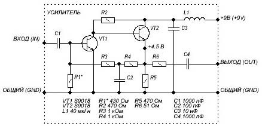
Рис. 3. Электрическая принципиальная схема усилителя на частоту до 70 МГц.
Усилитель мощности собран на печатной плате (рис. 4, 5) из одностороннего фольгированного стеклотекстолита. Общий провод (GND) платы имеет максимально возможную площадь.
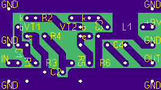
Рис. 4. Печатная плата усилителя. Размеры печатной платы 40 х 25 мм2.
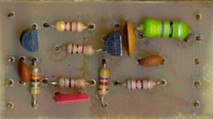
Рис. 5. Внешний вид печатной платы усилителя.
Модули задающего генератора смонтированы на кросс-плате. Эскиз и внешний вид платы показаны на рис. 6, 7.
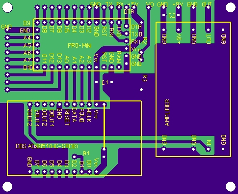
Рис. 6. Печатная кросс-плата цифрового синтезатора частоты. Размеры печатной платы 80 х 65 мм2.
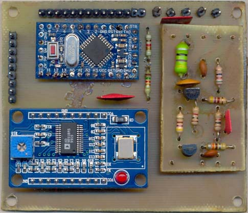
Рис. 7. Внешний вид печатной платы цифрового синтезатора частоты.
Кросс-плата с модулями монтируется в корпусе из оцинкованного железа, выполняющего роль электромагнитного экрана (рис. 8). Корпус состоит из основания и крышки, которые скрепляются между собой двумя винтами.
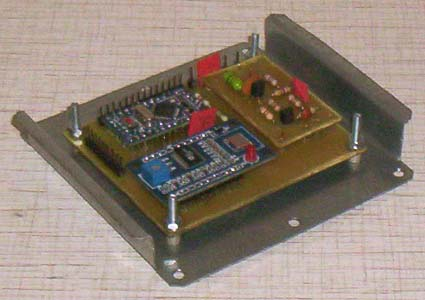
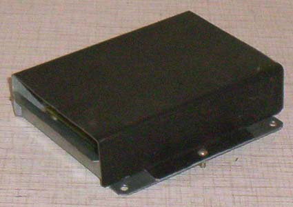
Рис. 8. Задающий генератор в электромагнитном корпусе.
Вариант программы микроконтроллера в среде Arduino (рабочая частота 40 ... 41 МГц, ЖКИ индикатор подключен в соответствии со схемой рис. 2, три кнопки установки рабочей частоты подключены к контактам D10, D11, D12 микроконтроллера):
|
/* #include
<Bounce2.h> byte sym1[8] =
// стрелка вниз byte sym2[8] = // буква
Г byte sym3[8] = // буква
ц byte sym4[8] = // буква
н #define pressed_long 2000 //
долговременное нажатие = 2 секунды Bounce bouncer1 = Bounce();
//создаем экземпляры класса Bounce unsigned long pressed_moment; //
момент нажатия кнопки long fr_1 = 40500000 ; // Main
frequency #define W_CLK A3 // A3 -
connect to AD9851 W_CLK #define B_MIN 10
// D10 - connect to Button Minimize #define LED_PIN 13 // D13 - LED #define pulseHigh(pin)
{digitalWrite(pin, HIGH); digitalWrite(pin, LOW); } void tfr_byte(byte data) void sendFrequency(double frequency)
{ void setup(){ pinMode(LED_PIN, OUTPUT); bouncer1.attach(B_MIN) ;
// Button A5 pulseHigh(RESET); start() ; } void loop(){ void start() { void KBD_But() { void F_Change() { |
Ссылки:
28.08.2019
Альтернативные источники
энергии
Компьютеры и
Интернет
Магнитные поля
Механотронные системы
Перспективные
разработки
Электроника и технология